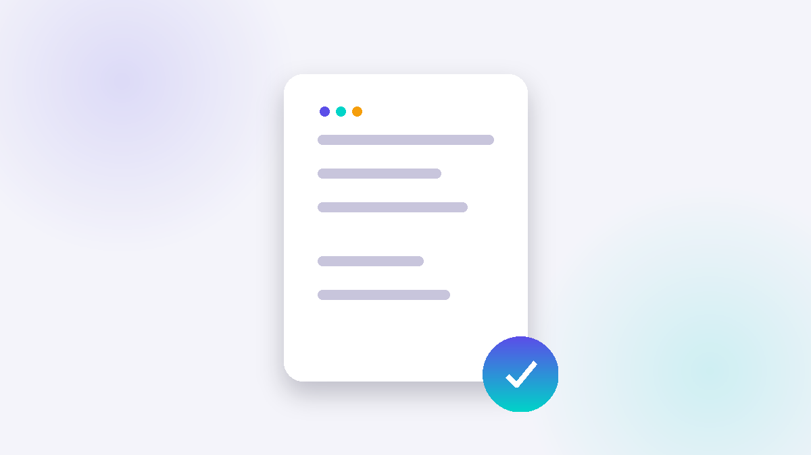

The Anti-Budget: How to Start Tracking Money When Spreadsheets Fail
Published: June 23, 2026 · Updated: November 2, 2026 · By Monica Becerra · 9 min read
Most budgeting advice starts with structure, categories, weekly reviews, a plan. For a lot of brains, that's exactly where it falls apart.
In short: An anti-budget means you pay yourself first and then stop tracking categories. On payday a set amount goes to savings automatically, your fixed bills get paid, and the rest is yours to spend without a spreadsheet. It suits ADHD brains because it needs very few decisions. The one thing it misses is seeing where your money goes, so this version adds a tiny habit: noticing what you spent and how you felt.

What an anti-budget usually means
When people search for an anti-budget, they usually mean one specific idea. You decide how much you want to save, and on payday that amount leaves your main account first, before you have a chance to spend it. Then your fixed bills get paid, rent, phone, the things that arrive every month whether you think about them or not. Whatever is left is simply yours. No categories, no envelopes, no checking whether you went over on groceries.
It's really pay yourself first with one extra rule: once the saving is done, you're allowed to stop tracking. Some people send that first slice to paying off expensive debt instead of savings, which follows the same logic.
For a brain that struggles with daily logging and weekly reviews, that rule is the whole appeal. The important decision happens once, and an automatic transfer keeps making it for you every month. The trade-off is real, though. If you never look at your spending again, you also never learn why some weeks the leftover money disappears by Wednesday. That's the gap the rest of this article fills.
Why the spreadsheet method fails so often
Traditional budgeting asks for three things before you've even started, that you sort spending into categories, that you log it the same day, and that you sit down weekly to review the numbers. Each one asks for a different kind of effort, and for ADHD and other executive function differences, any single one of them can quietly become the reason the whole system gets abandoned by week two.
Categorizing means making a decision in the moment, was this “food” or “entertainment”, right when you're least in the mood to stop and think. Logging the same day depends on a working memory that's usually already busy with five other things. And the weekly review asks you to sit with numbers that, for a lot of people, bring up shame faster than insight, so the spreadsheet gets closed and never opened again.
None of this means the person is bad with money. It means the system was built for a kind of attention that not every brain has on demand.
Start with noticing, not tracking
Keep the automatic saving from the classic anti-budget, and skip the part where you build a whole tracking system. Start one step earlier instead: notice. For a week or two, just write down what you spent and one word for how you felt buying it, no categories, no analysis, no judgment.
This isn't a workaround, it's actually one of the most well documented ways to change a behavior. Self-monitoring, simply observing and recording something about yourself, shows up across decades of behavior change research as one of the techniques that reliably works on its own, even before any plan or goal gets attached to it. You're not managing your spending yet, you're collecting honest data about it for the first time.
Why low friction works better for this kind of brain
A lot of financial advice assumes everyone weighs “buy now” against “save for later” the same way. Research on ADHD points to differences in delay discounting, how much a future reward gets mentally discounted compared to an immediate one, which helps explain why a system that only rewards you weeks later, like a monthly budget review, struggles to compete with the immediate pull of a purchase.
If structure fails because it asks for too much too soon, the fix isn't more discipline, it's less upfront cost. Noticing has almost none. There's no category to pick, no app to configure, no plan to stick to, just a line you write down.
How to actually do it
- Pick one place to write things down. Notes app, a sticky note, Finiverse, whatever you'll actually open again.
- Log two things only: the amount, and one word for how you felt. “Coffee, $4, tired.” That's a complete entry.
- Don't categorize yet. Resist the urge to organize while you're still collecting. Categories come later, once there's something real to categorize.
- After about two weeks, read it back in one sitting. Patterns usually show up on their own, certain feelings keep appearing next to certain kinds of purchases, and you didn't have to track anything cleverly to see it.
When you're ready for structure
Once you can see your own patterns, structure stops being a guess and starts being a response to something real. That's the point where categories, spending limits, or a tool like Finiverse's emotion check-ins actually have something to attach to, instead of asking you to predict your own behavior in advance.
The order matters more than the tool. Notice first. Build structure on top of what you actually find, not on what a generic budgeting template assumes about you.
Quick answers
What is an anti-budget?
An anti-budget is a way of managing money without tracking categories. On payday you move a set amount to savings (or extra debt payments) first, you pay your fixed bills, and whatever is left is yours to spend with no spreadsheet and no category limits.
Is the anti-budget the same as pay yourself first?
Almost. Pay yourself first means saving before you spend. The anti-budget is pay yourself first plus explicit permission to stop tracking what happens after that. The version in this article adds one light habit on top: noticing how you felt when you spent.
Does the anti-budget work for ADHD?
It often fits better than a classic budget because it needs far fewer decisions. Saving happens automatically on payday, so it doesn't depend on willpower or memory, and there are no daily categories to keep up. Its blind spot is that you stop seeing where the money goes, which is why adding a few seconds of noticing helps.
Is there an app for an anti-budget?
Finiverse works well for it. Home shows one safe-to-spend number after bills and savings, so you can spend the rest without doing the math, and you can log an amount and how you felt in a few seconds, with no categories required.
Sources
- Michie, S., Richardson, M., Johnston, M., et al. (2013). The Behaviour Change Technique Taxonomy (v1). Annals of Behavioral Medicine.
- Barkley, R. A. (2012). Executive Functions: What They Are, How They Work, and Why They Evolve. Guilford Press.
- Beauchaine, T. P., Ben-David, I., & Sela, A. (2017). Attention-deficit/hyperactivity disorder, delay discounting, and risky financial behaviors: A preliminary analysis of self-report data. PLOS ONE, 12(5), e0176933.
Want a tool that meets you at notice, not at structure?
Finiverse lets you log an amount and a feeling in seconds. Categories and patterns can come later.
Download Finiverse free →